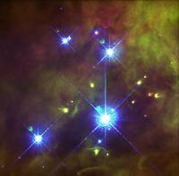
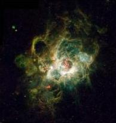

Research: High-Mass Star Formation
 The formation of high-mass stars remains one of the most significant unsolved problems in all of astrophysics. These stars, with masses greater than 8-10 solar masses, eventually explode as supernovae and produce most of the heavy elements in the universe. Through their winds, UV radiation, and supernovae massive stars dominate energy injection into the interstellar medium (ISM). Observations of HII regions produced by massive stars are a prime tool for extragalactic astronomers to determine the star formation rate and abundances in galaxies. Massive stars also affect planet formation: many low-mass stars are born in clusters containing massive stars whose UV radiation can destroy protoplanetary disks. The photograph of the Orion Nebula to the right illustrates this process dramatically: the bright blue stars are blowing material off the dimmer green stars, giving them a cometary appearance and creating the bright arcs around the dimmer stars. (Image from John Bally, Dave Devine, and Ralph Sutherland, using HST.)
Despite the importance of massive star formation, relatively little is known about it. Observations are difficult because massive star forming sites are heavily obscured by dust and therefore invisible in optical and near-IR. Massive star forming sites are rare and thus tend to be farther from Earth than low-mass star forming regions. Observations therefore demand high spatial resolution. Massive star formation occurs in clusters with high stellar densities, so even greater resolution is required to avoid confusion. In addition, massive stars destroy their natal environment via HII regions. Much of what we do know comes from observations of ultracompact HII regions that become visible only after star formation is nearly complete. The image below illustrates this -- it shows a nebula in the galaxy M33 that has formed a cluster of massive stars in its center. The massive stars' radiation is heating the nebula, causing it to glow, and will eventually destroy it. (Image from Hui Yang, using HST.)
 Massive star formation also poses major theoretical challenges. Massive stars begin burning their nuclear fuel and radiating prodigious amounts of energy while still accreting. Acceleration due to radiation pressure on dust grains in the accreting material can exceed that due to gravity for all stars above about 10 solar mases. This leads to the question: how is it possible to sustain a sufficiently high-mass accretion rate onto a massive protostellar cores despite the radiation pressure on the accreting envelope? Proposed solutions include changing the composition of dust grains, accreting matter through a disk, and altering the effective radiation temperature to which the infalling material is exposed. However, there is still no definitive solution to this classic problem.
Numerical simulations have not fared any better; for realistic initial conditions, the most massive star formed in a published calculation is still less than 10 solar masses. The severe computational demands of the problem forced previous workers to overly simplify the behavior of the dust grains and to work in either one or two dimensions. Using our 3-D self-gravitational, multi-fluid, radiation-hydrodynamics code with full adaptive mesh refinement (AMR) on parallel supercomputers we are simulating massive star formation without these limitations. We will correctly treat coagulation and shattering of dust grains. The high resolution allowed by AMR enables us to work in three-dimensions, accurately modeling the inherently three-dimensional effects that have a direct bearing on how massive stars can form. For example, interaction of the radiation with the infalling dusty envelope is Rayleigh-Taylor and possibly also Kelvin-Helmholtz unstable. Accurate simulations capable of treating these effects self-consistently are vital building a self-consistent theory of high-mass star formation.